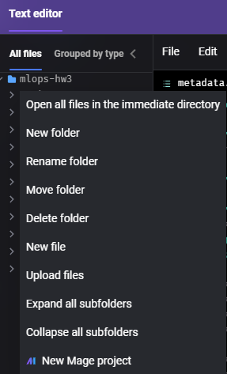
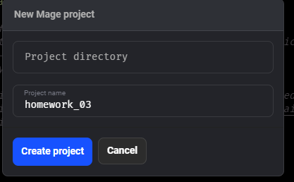
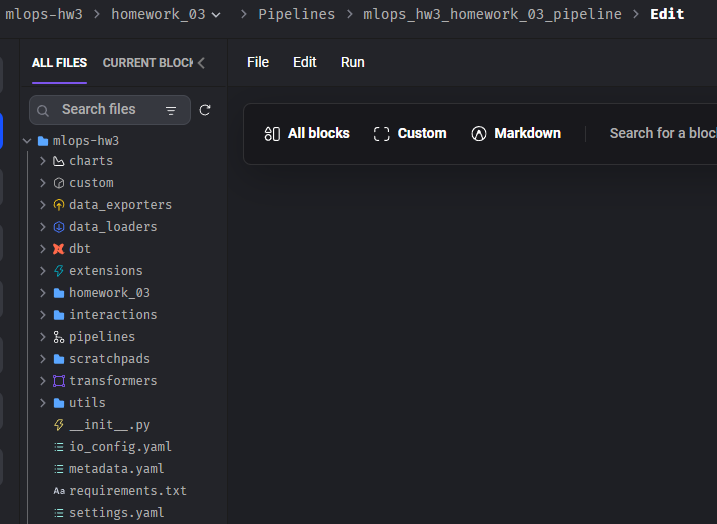
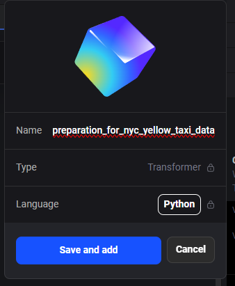
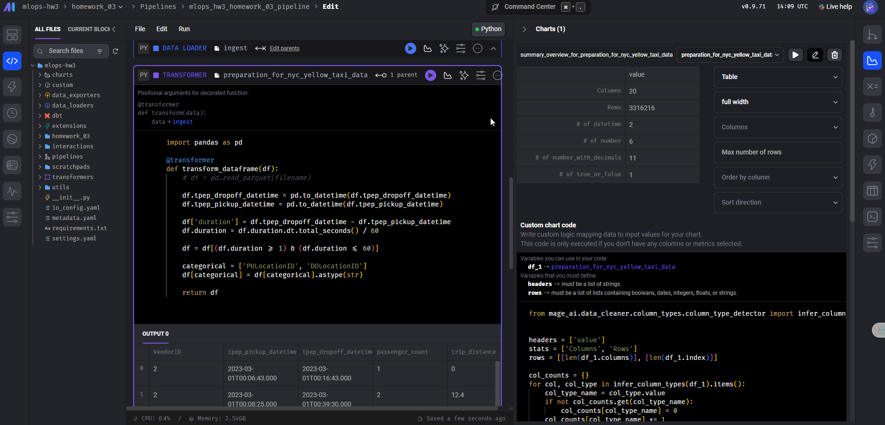
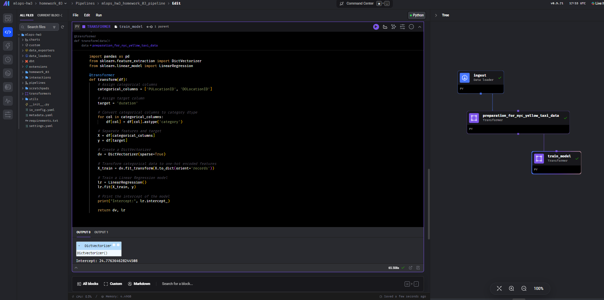

Homework 3 Report
Overview
This report details the steps taken to complete Homework 3, which involves creating a data pipeline using Mage, preparing data, and training a machine learning model.
Steps and Screenshots
Step 1: Setup Docker and Mage
I started Docker Desktop and then, in PowerShell (Windows terminal), I ran the following command to start Mage:
docker run -it -p 6789:6789 -v ${PWD}:/home/src mageai/mageai /app/run_app.sh mage start mlops-hw3Mage version used: v0.9.71
Screenshot:

Step 2: Create a New Project
- I navigated to
localhost:6789and opened the Text Editor. - Right-clicked on the file explorer and selected “New Mage Project”.
- Created a new project named
homework_03.
Screenshots:
 
Step 3: Create a Pipeline
I created a pipeline for the project homework_03.
Screenshot:
Step 4: Ingest Data
I created a data loader block named Ingest to read the March 2023 Yellow taxi trips data.
import requests
from io import BytesIO
from typing import List
import pandas as pd
if 'data_loader' not in globals():
from mage_ai.data_preparation.decorators import data_loader
@data_loader
def ingest_files(**kwargs) -> pd.DataFrame:
dataset_trips_2023_march = "https://d37ci6vzurychx.cloudfront.net/trip-data/yellow_tripdata_2023-03.parquet"
response = requests.get(dataset_trips_2023_march)
if response.status_code != 200:
raise Exception(response.text)
df = pd.read_parquet(BytesIO(response.content))
return df
Screenshots:


Step 5: Data Preparation
I created a transformer block for data preparation with the previous block as its parent. The transformation includes calculating the trip duration and converting categorical columns to string type.
import pandas as pd
@transformer
def transform_dataframe(df):
df.tpep_dropoff_datetime = pd.to_datetime(df.tpep_dropoff_datetime)
df.tpep_pickup_datetime = pd.to_datetime(df.tpep_pickup_datetime)
df['duration'] = (df.tpep_dropoff_datetime - df.tpep_pickup_datetime).dt.total_seconds() / 60
df = df[(df.duration >= 1) & (df.duration < 60)]
categorical = ['PULocationID', 'DOLocationID']
df[categorical] = df[categorical].astype(str)
return df
Screenshots:
 Step 6: Train a Linear Regression Model
I created another transformer block to train a linear regression model. The model uses pickup and dropoff locations as features and trip duration as the target.
import pandas as pd
from sklearn.feature_extraction import DictVectorizer
from sklearn.linear_model import LinearRegression
@transformer
def transform(df):
categorical_columns = ['PULocationID', 'DOLocationID']
target = 'duration'
for col in categorical_columns:
df[col] = df[col].astype('category')
X = df[categorical_columns]
y = df[target]
dv = DictVectorizer(sparse=True)
X_train = dv.fit_transform(X.to_dict(orient='records'))
lr = LinearRegression()
lr.fit(X_train, y)
print("Intercept:", lr.intercept_)
return dv, lr
Screenshots:
Results
The intercept of the linear regression model is 24.77.
This completes the steps and outputs for Homework 3. The pipeline successfully ingests, transforms the data, and trains a linear regression model.